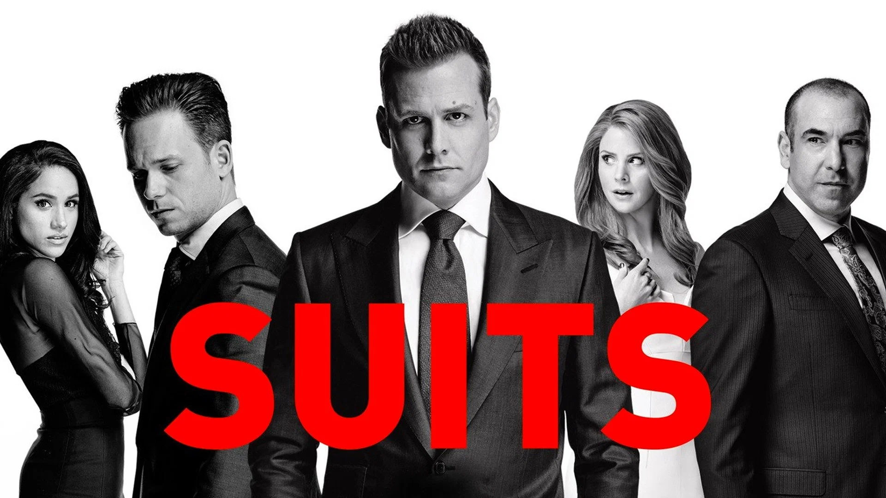

Suits es una serie estadounidense que sigue a Mike Ross, un joven brillante sin título de abogado, quien empieza a trabajar en un prestigioso bufete de Nueva York junto a Harvey Specter. La serie combina drama legal, ambición profesional y las complicadas relaciones dentro del bufete.
Curiosidades
- La serie se ambienta en Nueva York, pero en realidad solo se filmó allí el episodio piloto; el resto se grabó en otro lugar.
- Suits duró 9 temporadas antes de ser cancelada, con 134 episodios en total y capítulos de 42 minutos cada uno.
- Mike Ross, interpretado por Patrick J. Adams, es un joven que abandonó la universidad pero tiene memoria fotográfica, y termina trabajando como asociado del carismático abogado Harvey Specter.
- El edificio usado como el bufete de abogados en Suits es el mismo que se usó en la serie 'Orphan Black'.